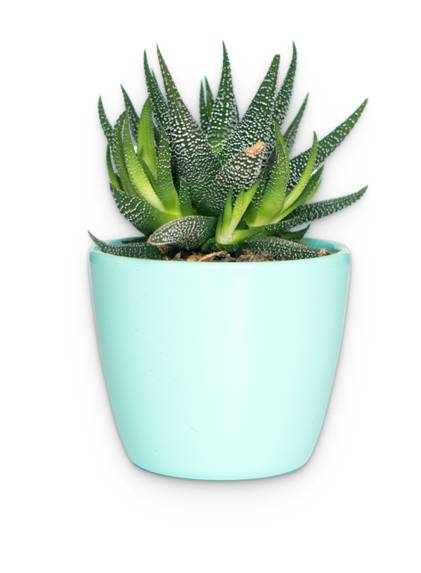

Haworthiopsis limifolia
Scientific Name: Hawothiopsis limifolia
Common Names: Fairy Washboard,File Leafed Haworthia,Lime Haworthia
Habitat and Distribution
Native Range: Haworthiopsis limifolia is native to Southern Africa, particularly in countries like Mozambique, Eswatini (Swaziland), and South Africa.
Medicinal Uses
While Haworthiopsis limifolia itself is not widely recognized for its medicinal properties, some species within the broader Aloe and Haworthia genera have been used in traditional medicine. These plants are occasionally used for their soothing, anti-inflammatory properties, particularly in skin treatments. However, these uses are not as well-documented or researched as those for more common medicinal plants like Aloe vera.
--> -->How to Grow Haworthiopsis limifolia
- Soil Requirements: Prefers well-draining, sandy, or gritty soil, similar to what is used for cacti and other succulents. A cactus mix or a homemade mix with sand and perlite works well.
- Sunlight: It grows best in bright, indirect light. Too much direct sunlight can cause the leaves to turn reddish-brown or yellow. Indoors, place it near a window with filtered sunlight.
- Climate: It thrives in arid and semi-arid environments. In its natural habitat, it is typically found growing in rocky, well-drained soils under the partial shade of other vegetation.
- Planting:
- Watering: Water sparingly. Let the soil dry out completely between waterings to prevent root rot. During the growing season (spring and summer), you can water it more frequently, but still, only when the soil is dry. Reduce watering in the winter.
- Temprature: It thrives in temperatures between 60°F and 80°F (16°C to 27°C). It is not frost-hardy, so it should be protected from freezing temperatures.
- Propagation: It can be easily propagated by removing and planting offsets (small clones that grow at the base of the plant). Allow the offsets to dry for a day or two before planting them in well-draining soil.